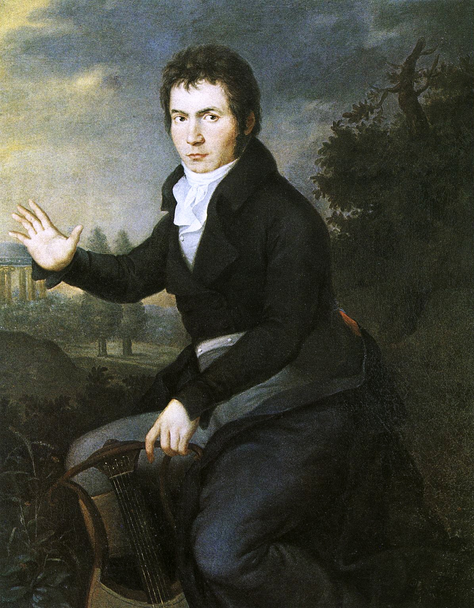
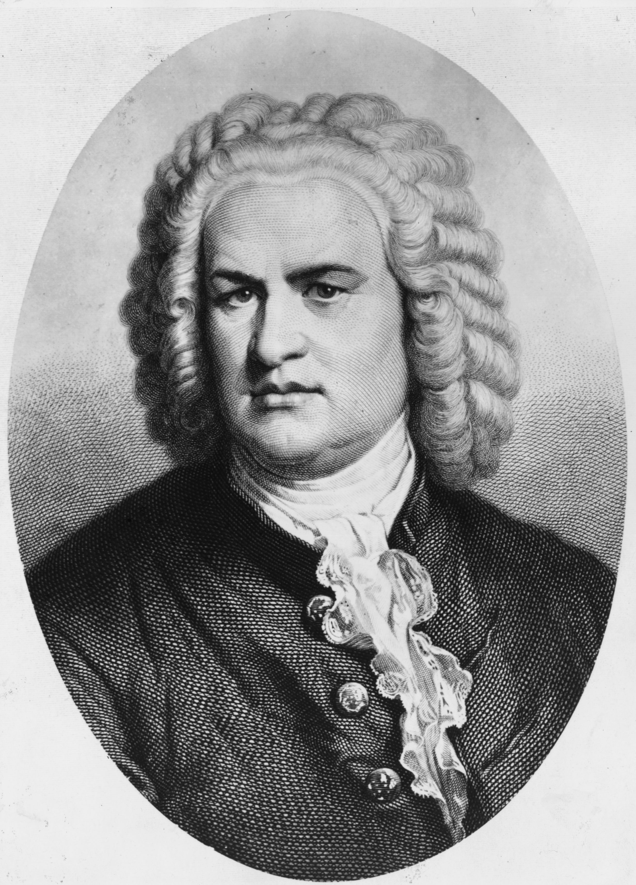
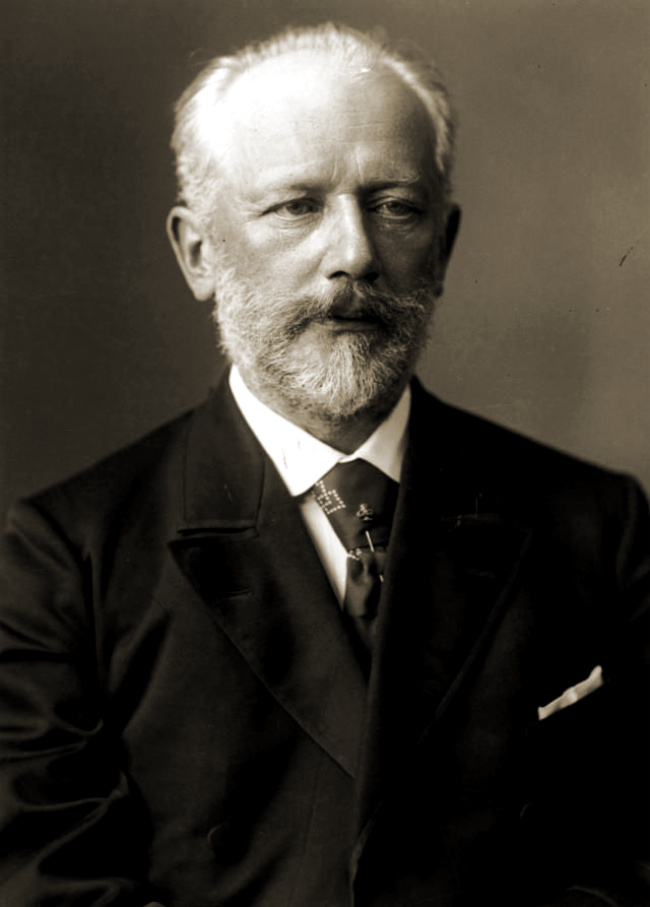

Ludwig Van Beethoven
- nato a Bonn nel 1770;
- figlio di famiglia disagiata;
- fanciullo prodigio ma con scarsa istruzione;
- suona cembalo, violino, pianoforte;
- compositore;
- assiduo frequentatore di salotti;
- insegnante per diletto;
- con il cuore spezzato; presto sordo e austero.
- Cavallo di battaglia: “Inno alla gioia”, in Sinfonia n.9
Wolfgang Amadeus Mozart
- nato a Salisburgo nel 1756;
- compositore in fasce;
- musicista sempre in viaggio;
- pupillo di illustri uomini;
- innamorato ma dal cuore spezzato (per colpa del padre);
- a grandi opere corrispondono grandi depressioni mentali;
- per non farsi mancare nulla, ha composto/scritto 21 opere, 49 sinfonie, 30 concerti, 23 quartetti per archi, 52 sonate e tanto altro (da scoprire insieme);
- Cavallo di battaglia: “Il Flauto Magico”.
Crediti foto: Pietro Antonio Lorenzoni

Johann Sebastian Bach
- nato a Eisenach 1685;
- musicista figlio di musicisti;
- violinista post studi, poi subito organista;
- presto compositore assiduo;
- amante della famiglia, ben 20 pargoli;
- insegnante per passione;
- grande viaggiatore senza sosta;
- ha scritto oltre 200 cantate e musiche varie;
- Cavallo di battaglia: “Toccata e Fuga in Re Minore”.
Antonio Vivaldi
- nato a Venezia nel 1678;
- sacerdote di giorno, insegnante di violino di notte;
- nickname “prete rosso” per la fluente chioma rossa;
- amato sia in patria, che all’estero;
- tendenza a spendere troppo, rasente la povertà (l’amore potrà risolverlo?);
- composto più di 500 concerti, numerose opere, tra cui alcune sacre;
- Cavallo di battaglia: “Le Quattro Stagioni”.

Pëtr Il'ič Čajkovskij
- nato a Votkinsk nel 1840;
- insegnante compositore a Mosca, ma non si ferma qui;
- virtuoso tra Francia, Italia e Germania;
- musicista di sentimentale eloquenza;
- esponente della tendenza occidentalizzante;
- russo più famoso e ascoltato del suo tempo;
- compositore di balletti e opere teatrali celebrissime;
- Cavalli di battaglia: “Il Lago dei Cigni”, “La Bella Addormentata nel Bosco”, “Schiaccianoci”… da far tremare la concorrenza.
Fryderyk Chopin
- nato a Varsavia nel 1810;
- pianista sin dalle prime ore di vita;
- travagliato da amori mancati, nostalgia per la patria e arroganza russa;
- romantico nel profondo;
- modesto fautore di un profondo abbellimento della musica da pianoforte;
- umile creatore di melodie armoniose e atmosfere meravigliose;
- forte tendenza a perdere pecunia;
- presto infermo;
- Cavallo di battaglia: “Notturno, Opera n.9”.

Igor' Fëdorovič Stravinskij
- nato a Pietroburgo nel 1882;
- pianista precoce e musicista autodidatta;
- grande studioso e giurista;
- post studi subito compositore;
- tardivo rispetto alla concorrenza;
- amico di un coreografo, si immerge nel mondo del balletto;
- compositore di numerose opere e balletti;
- perennemente afflitto da ricordi passati e difficoltà storiche (nostalgia canaglia);
- Cavallo di battaglia: “L’Uccello di Fuoco”.

Johannes Brahms
- nato ad Amburgo nel 1833;
- frequentatore assiduo di Vienna, Svizzera, Germania;
- illustre direttore della Singakademie;
- scrittore di opere e composizioni senza sosta;
- amato dal pubblico e critici;
- profondo sentimentalista e romantico, composizioni caratterizzate da commozione e intima dolcezza;
- Cavallo di battaglia: “Ninna Nanna”, in “Danze Ungheresi”.